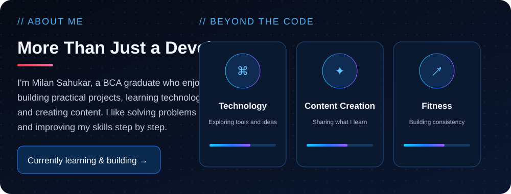
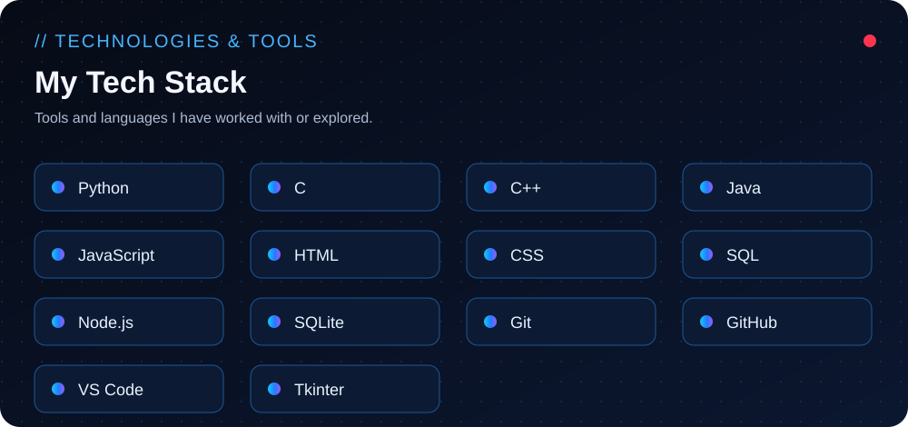

Milan Sahukar — GitHub Profile
Local preview of the README sections. GitHub renders the same SVG assets from the repository.




Featured Projects
Kadam Foods · Pharmacy Billing System

Local preview of the README sections. GitHub renders the same SVG assets from the repository.


Kadam Foods · Pharmacy Billing System